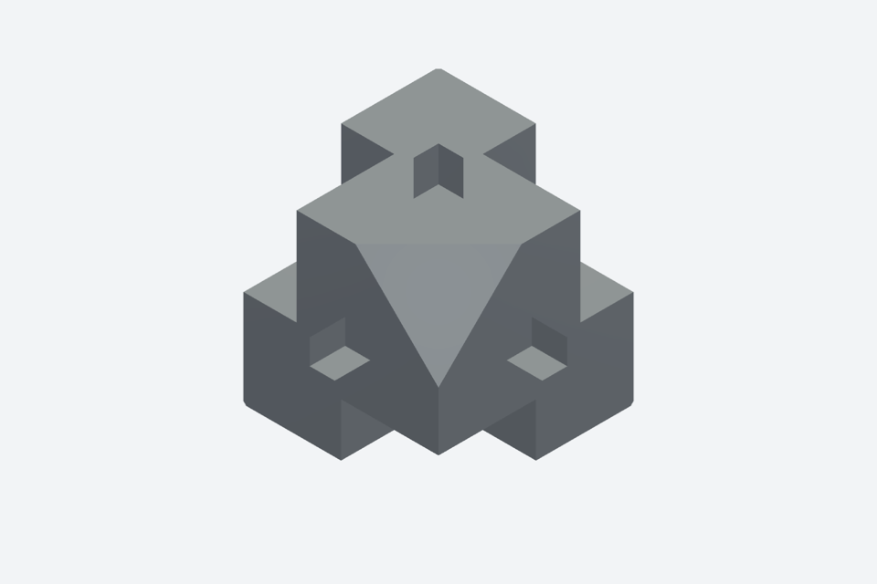
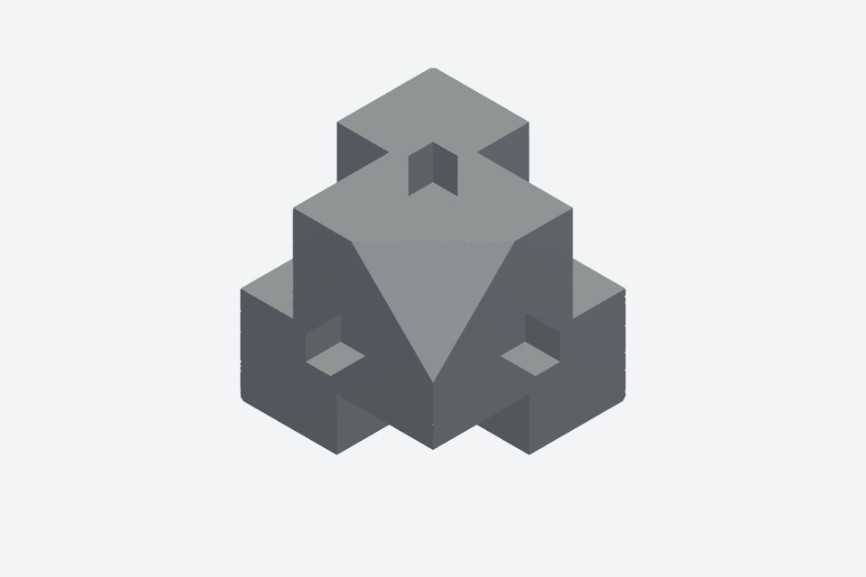
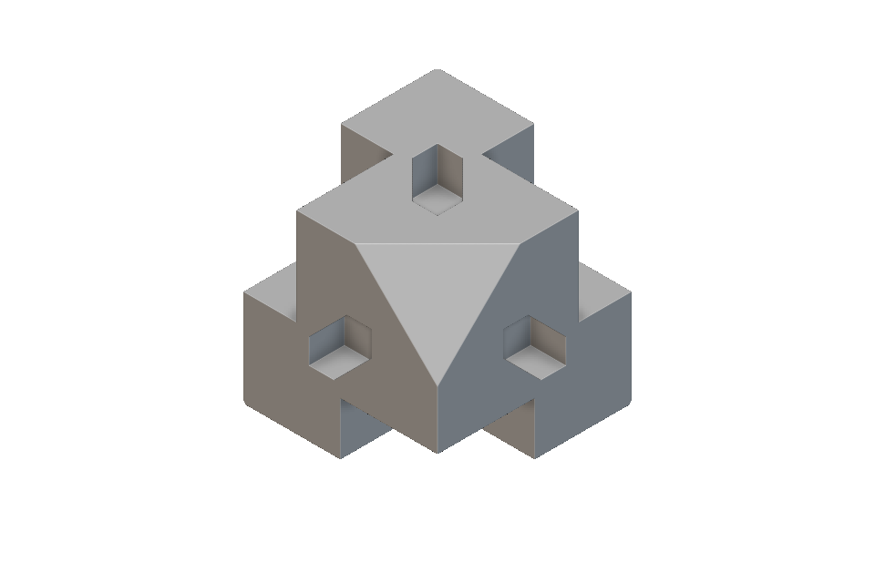

One corner.
Continuous CSG.
Rebuild a STEP corner block with editable native solids, measured plane cuts, and genuine hole profiles.
The included notebook contains the modeled native implicit body. Its recorded mesh reaches 99.973930% volume intersection-over-union against the original STEP corner. The comparison figures below are new host renders of those recorded meshes. This package does not claim a new nTop execution.
01 / Modeled versus sourceSame view. Same scale.
The left image uses a fine tessellation of the original STEP solid. The right image uses the actual recorded nTop export. Camera, orthographic scale, material, lighting, and image size match. Choose the recess view or the negative-X pocket and bore view.


Blend the aligned images
This is an image blend, not a deviation map. Shading and edge pixels do not measure geometric error.
Figure provenance and hashes. Raw comparison meshes are excluded from Git and remain in ignored output/.
02 / Recorded measurementsOverlap and surface error
Intersection-over-union equals intersection volume divided by union volume. The target for this reconstruction was at least 99.5%. Both compared meshes are closed.
| Recorded measure | Value | Scope |
|---|---|---|
| STEP tessellation volume | 6866.599466 mm³ | Fine source mesh, not exact BRep integration |
| Native mesh volume | 6866.048674 mm³ | Actual nTop AT / Remesh / Sharpen export |
| Missing material | 1.170529 mm³ | Source volume outside the native mesh |
| Excess material | 0.619736 mm³ | Native volume outside the source mesh |
| STEP to native sample count | 7,968 | Vertices and area samples |
| Native to STEP sample count | 98,854 | Vertices and area samples |
Mesh overlap includes tessellation error. Surface extrema are sampled results, not certified Hausdorff bounds. A screenshot does not validate mesh accuracy or global continuity. Read the complete recorded values and the native expression and settings binding.
A new host comparison against the included extracted STEP reproduces 99.973930% IoU with the unchanged recorded native export. This recheck does not execute nTop.
03 / Native construction24 solid features, three real profiles
The CSG construction uses seven boxes, eight plane half-spaces, six cylinders, and three projected hexagonal recess profiles. Boolean unions, intersections, and subtraction combine these features.
The three profile extrusions form real recesses. They do not approximate sloped faces. An earlier rejected construction used 106 thin slice extrusions; this native model replaces those slices with continuous plane cuts.
The notebook output is one native implicit body. The part has no exposed notebook inputs. To change a feature, edit its construction and repeat validation. This example does not include assembly resizing or an assembly model.
The corner spans 22 × 22 × 22 mm in its original STEP world coordinate frame. The included STEP is solid 0 extracted from the original assembly. It has one solid and no placement transform.
| Source coordinate | Minimum, mm | Maximum, mm |
|---|---|---|
| X | −209.428362 | −187.428362 |
| Y | −11.330577 | 10.669423 |
| Z | 18.509763 | 40.509763 |
The extraction and reimport audit preserves the source volume and coordinate frame within numerical precision. This is a new offline CAD check, separate from the recorded native geometry result.
04 / Recorded native imageThe editable implicit body in nTop

The portability audit binds the recorded image source to the included model without changing geometry, camera, or display state. The original capture record marks the image complete and visually inspected. It records no elapsed time and no process exit code. No opening-speed or live GUI update claim follows from that image.
The supplied model preserves collapsed construction and its recorded view. Live Notebook API import, a new native evaluation in this checkout, and live GUI update timing remain unverified.
05 / Use and reproduceA focused, portable example
- Open Corner_block.ntop in the recorded compatible nTop build.
- Inspect the separate source STEP corner and compare the matched views.
- Read the shared CSG modeling skill before changing native features.
- Follow the demo README for portable source and verification commands.
The report works offline with its adjacent assets/ folder. It contains compact authored model figures, no reference photographs, and no raw mesh payloads.